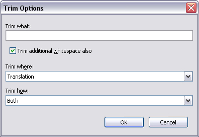

Trim
Open the trim dialog when you need to quickly trim leading and trailing whitespace or other
characters from all the items in the list. The dialog is available from the
Actions-Trim (Ctrl+Shift+T) menu:

-
Trim what
-
The characters to trim from the item. Each character is trimmed individually from the item
until a non-matching character is encountered. Position of characters within the text field
is not important.
-
Trim additional whitespace also
-
If checked, all characters below ASCII #33 are trimmed in addition to the ones in
Trim what (i.e. spaces, tabs etc). If this option is checked, Trim
what can be empty.
-
Trim where
-
Specify if you want to perform the trim in the Original or Translation
string or in Both.
-
Trim how
-
Specify if you want to trim Leading or Trailing characters or from
Both sides.
Click OK to perform the trimming. Note that the trimming is performed on all
items in the list. Click Cancel to close the dialog without trimming.